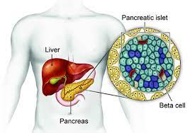

Insulinoma

SYMPTOMS:
- double vision or blurred vision
-
confusion
-
anxiety and irritability
-
dizziness
-
mood swings
-
weakness
-
sweating
-
hunger
-
tremors
-
sudden weight gain
CAUSES
- Doctors don’t know exactly why people get insulinomas. The tumors typically show up without warning.
-
When you eat food, the pancreas creates insulin. Insulin is a hormone that helps your body store the sugar from your food. Once the sugar has been absorbed, the pancreas stops producing insulin. This process usually keeps blood sugar levels stable. However, it can be disrupted when an insulinoma develops. The tumor continues to produce insulin even when your blood sugar drops too low. This can lead to hypoglycemia, a serious condition characterized by low blood sugar levels.
DIAGNOSIS
- proteins that block the production of insulin
medications that cause the pancreas to release more insulin
-
other hormones that affect insulin production
TREATMENT
- radiofrequency ablation, which uses radio waves to kill cancerous cells in the body
-
cryotherapy, which involves the use of extreme cold to destroy cancerous cells
-
chemotherapy, which is an aggressive form of chemical drug therapy that helps destroy cancerous cells